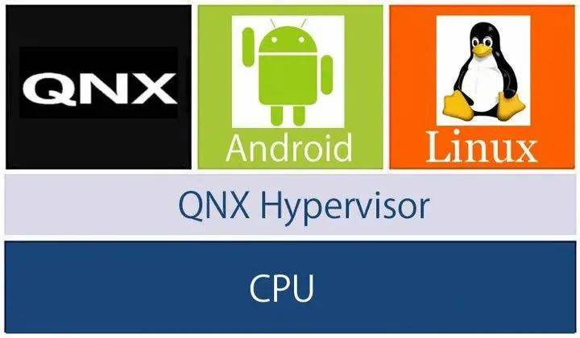

5分钟了解汽车操作系统（科普篇）
在智能汽车+电动汽车的浪潮下，「软件定义汽车」的理念已经成为很多厂家的共识，未来决定汽车个性化差异的不再是马力大小、座椅材质、底盘软硬等，而应该是人工智能、大数据和云计算技术的综合体。
要想实现这一切，就要给汽车安装一个或者多个操作系统。
根据被控对象的不同，这些控制器大概可以分为两类：
这类系统对实时性的要求非常高，而且一般都会有功能安全等级的需求。
这类系统一般与用户体验相关，不直接参与汽车行驶的控制决策，对车辆行驶性能和安全影响较小。
两类硬件对实时性的要求不一样，通常需要两种操作系统来控制，分别是实时操作系统（Real Time Operating System，RTOS）和分时操作系统（Time-sharing Operating System）。
常见的 RTOS 有 QNX、VxWorks、MontaVista 等。
常见的分时操作系统有 Windows、iOS、Android 等。
举个例子：
Hypervisor 的出现使得“多系统”的概念成为了可能，只要资源足够，我们就可以在控制器上安装多种不同种类、不同供应商的操作系统来满足上层功能的需求。
对于座舱域这类对功能安全和信息安全要求较低的控制器，国内多是基于 Android/AliOS 进行开发，国外多是基于 Linux 进行开发。
而对于有较高安全性和实时性要求的自动驾驶控制器，目前一般基于 Linux/QNX 进行开发。
QNX 内核小巧，运行速度极快，具有独特的微内核架构，安全和稳定性很高，是全球首款通过 ISO26262 ASIL-D 安全认证的实时操作系统，常用于安全稳定性要求较高的数字仪表中。
QNX 市场份额超过 50%，通用、奥迪、宝马、保时捷等国际大厂都在使用 QNX。
Linux 与 QNX 相比最大优势在于开源，具有很强的定制开发灵活度。我们通常说的「基于 Linux 开发新的操作系统」是指基于 Linux Kernel（内核）进一步集成中间件、桌面环境和部分应用软件。
Linux 功能较 QNX 更强大，组件也更为复杂，因此 Linux 常用于支持更多应用和接口的信息娱乐系统中。
AGL（Automotive Grade Linux）是一个协作性开源项目，它将汽车制造商，供应商和技术公司召集在一起，以加速开发和采用针对互联汽车的完全开放的软件堆栈。
AGL 以 Linux 为核心，正在从头开始开发一个开放平台，该平台可以用作事实上的行业标准，以实现新功能和新技术的快速开发。
AGL 早期主要为丰田、本田、日产等日系厂商，随着 2019 年大众、现代汽车的加入，AGL 势力规模逐渐壮大。截至 2020 年 3 月，国内已有中国移动、上汽集团、德赛西威、中科创达等公司加入了 AGL，成员总数超过 150 个。
Linux 应用生态最为丰富，主要应用于移动设备。
Android 手机上的 APP 不需要经过大的修改就可以应用在车机上，有利于国内互联网厂商切入汽车领域，快速建立起车载软件生态。尤其是各大互联网巨头、自主品牌、造车新势力纷纷基于 Android 进行定制化改造，推出了自己的汽车操作系统，如阿里 AliOS、百度小度车载 OS、比亚迪 DiLink、蔚来 NIO OS、小鹏 Xmart OS 等。
下面三种操作系统的对比表格：
下面是各家汽车品牌所使用的操作系统一览表：
我相信未来一定会出现一个类似于 Apple store 的汽车 APP 商店，每个消费者都可以订阅自己的想要的服务，实现「汽车 = 大手机 + 4个轮子」的愿景。
要想实现这一切，就要给汽车安装一个或者多个操作系统。
操作系统（Operating System, OS）就像一个政府，它除了负责管理和调度汽车的硬件/软件资源，还向外提供了一些列接口，让开发人员或者其它软件来使用。
实时操作系统 VS 分时操作系统
一辆汽车上存在着上百个控制器，包括发动机、变速箱、电动机、ESP，也包括中控大屏、车机系统、车道辅助等。根据被控对象的不同，这些控制器大概可以分为两类：
1) 汽车电子控制
通过直接向执行机构（如电子阀门、继电器开关、执行马达等）发送指令，以控制发动机、变速箱、动力电池等协同工作的系统。这类系统对实时性的要求非常高，而且一般都会有功能安全等级的需求。
2) 车载电子设备
例如仪表、中控、抬头显示（HUD）、流媒体后视镜等。这类系统一般与用户体验相关，不直接参与汽车行驶的控制决策，对车辆行驶性能和安全影响较小。
两类硬件对实时性的要求不一样，通常需要两种操作系统来控制，分别是实时操作系统（Real Time Operating System，RTOS）和分时操作系统（Time-sharing Operating System）。
1) 实时操作系统
实时操作系统是指当外界事件或数据产生时，能够接受并以足够快的速度予以处理，其处理的结果又能在规定的时间之内来控制生产过程，或者对处理系统作出快速响应，并控制所有实时任务协调一致运行的操作系统。常见的 RTOS 有 QNX、VxWorks、MontaVista 等。
2) 分时操作系统
分时操作系统是一种联机的多用户交互式的操作系统。一般采用时间片轮转的方式使一台计算机为多个终端服务，对每个用户能保证足够快的响应时间，并提供交互会话能力。常见的分时操作系统有 Windows、iOS、Android 等。
举个例子：
- 对于安全气囊控制器来说，由于这是与安全相关的关键功能，极小的时间误差（太早或太迟）都会产生灾难性后果，甚至导致人员伤亡，所以必须使用实时操作系统；
- 对于车载终端来说，我们可能需要一边打电话，一边进行实时导航，所以使用分时操作系统。
硬件虚拟化技术
一辆汽车上众多硬件设备的应用场景不同，对实时性的要求也不同，所以往往需要使用多个操作系统来相互配合。为了解决一套硬件安装多个操作系统的问题，后来 QNX 推出了一种硬件虚拟化技术，叫做 Hypervisor。QNX 是 Blackberry（黑莓）推出的一款实时操作系统。
虚拟化技术其实就是虚拟机，和我们在电脑上使用的 VMware、VirtualBox 是一个道理。Hypervisor 的出现使得“多系统”的概念成为了可能，只要资源足够，我们就可以在控制器上安装多种不同种类、不同供应商的操作系统来满足上层功能的需求。

常用操作系统
从全球来看，目前汽车底层操作系统格局较为稳定，主要玩家有三个，分别是：- Blackberry 公司的 QNX；
- 开源基金会的 Linux；
- Google 公司的 Android。
对于座舱域这类对功能安全和信息安全要求较低的控制器，国内多是基于 Android/AliOS 进行开发，国外多是基于 Linux 进行开发。
而对于有较高安全性和实时性要求的自动驾驶控制器，目前一般基于 Linux/QNX 进行开发。
1) QNX
QNX 是一款微内核、嵌入式、非开源、安全实时的操作系统。QNX 内核小巧，运行速度极快，具有独特的微内核架构，安全和稳定性很高，是全球首款通过 ISO26262 ASIL-D 安全认证的实时操作系统，常用于安全稳定性要求较高的数字仪表中。
QNX 市场份额超过 50%，通用、奥迪、宝马、保时捷等国际大厂都在使用 QNX。
2) Linux
Linux 是一款开源、功能更强大的操作系统。Linux 具有内核紧凑高效等特点，可以充分发挥硬件的性能。Linux 与 QNX 相比最大优势在于开源，具有很强的定制开发灵活度。我们通常说的「基于 Linux 开发新的操作系统」是指基于 Linux Kernel（内核）进一步集成中间件、桌面环境和部分应用软件。
Linux 功能较 QNX 更强大，组件也更为复杂，因此 Linux 常用于支持更多应用和接口的信息娱乐系统中。
AGL（Automotive Grade Linux）是一个协作性开源项目，它将汽车制造商，供应商和技术公司召集在一起，以加速开发和采用针对互联汽车的完全开放的软件堆栈。
AGL 以 Linux 为核心，正在从头开始开发一个开放平台，该平台可以用作事实上的行业标准，以实现新功能和新技术的快速开发。
AGL 早期主要为丰田、本田、日产等日系厂商，随着 2019 年大众、现代汽车的加入，AGL 势力规模逐渐壮大。截至 2020 年 3 月，国内已有中国移动、上汽集团、德赛西威、中科创达等公司加入了 AGL，成员总数超过 150 个。
3) Android
Android 是由 Google 公司和开放手机联盟基于 Linux 开发的操作系统，被称为基于 Linux 开发的最成功的产品之一。Linux 应用生态最为丰富，主要应用于移动设备。
Android 手机上的 APP 不需要经过大的修改就可以应用在车机上，有利于国内互联网厂商切入汽车领域，快速建立起车载软件生态。尤其是各大互联网巨头、自主品牌、造车新势力纷纷基于 Android 进行定制化改造，推出了自己的汽车操作系统，如阿里 AliOS、百度小度车载 OS、比亚迪 DiLink、蔚来 NIO OS、小鹏 Xmart OS 等。
下面三种操作系统的对比表格：
|
操作 系统 |
份额 | 优势 | 劣势 | 合作厂商与供应商 |
|---|---|---|---|---|
| QNX |
约 50% |
安全性和稳定性极高，符合车规级要 求 |
商业软件，需要授权费用，只应用在较高端车型上 | 通用、克莱斯勒、凯迪拉克、雪佛兰、雷克萨斯、路虎、保时捷、奥迪、宝马、大陆、博士等 |
| Linux |
约 20% |
免费+灵活 | 应用生态不完善，技术支持差 | 丰田、日产、特斯拉 |
| Android |
目前 较低 |
开源，有强大的移动生态环境 | 安全性较差，无法适配仪表盘等安全要求高的部件 | 奥迪、通用、蔚来、小鹏、吉利、比亚迪、英伟达等 |
| Win CE |
约 16% |
Windows 应用开发便利 | 即将退出历史舞台 | 福待 Sync 1、Sync 2 等 |
下面是各家汽车品牌所使用的操作系统一览表：
| 汽车品牌 | 操作系统 |
|---|---|
| Audi | QNX |
| BMW | QNX |
| Chery | Microsoft、Linux、QNX |
| Ford | Microsoft |
| Geely | Microsoft、Linux |
| GM | Microsoft、QNX、VxWorks、MontaVista、Linux、MicrolTRON |
| Honda | Microsoft、MicrolTRON |
| Hyundai | QNX |
| Mercedes-Benz | Micnwoft、QNX |
| Nissan | MicrolTRON、VxWorks |
| PSA | Microsoft |
| SAIC Roewe | Microsoft、QNX、Android |
| Toyota | MicrolTRON |
| VW | Microsoft、QNX、VxWorks、MontaVista |
总结
车载操作系统是“软件定义汽车”的基石，是应用功能的平台。狭义的操作系统格局已定，各家玩家正基于已有的平台，努力打造个性化的标签。我相信未来一定会出现一个类似于 Apple store 的汽车 APP 商店，每个消费者都可以订阅自己的想要的服务，实现「汽车 = 大手机 + 4个轮子」的愿景。
关注公众号「站长严长生」，在手机上阅读所有教程，随时随地都能学习。内含一款搜索神器，免费下载全网书籍和视频。

微信扫码关注公众号